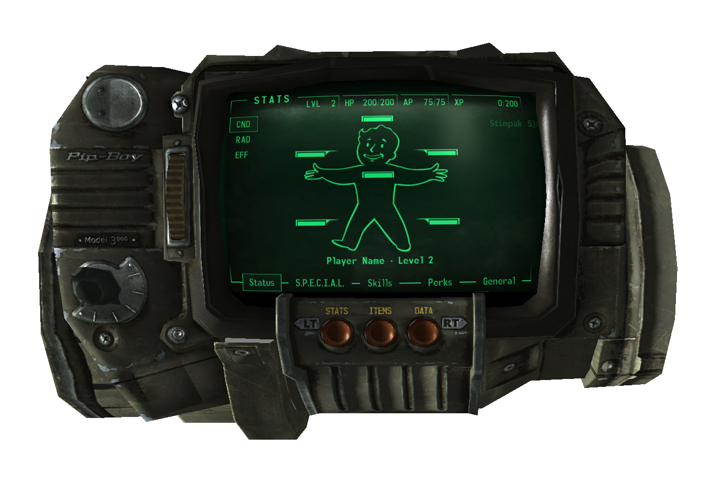
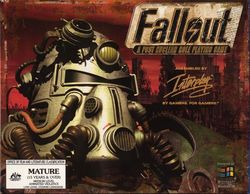
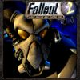
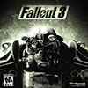
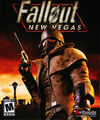
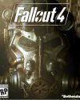

Что такое Fallout?
"Не следует путать c серией игр FlatOut!"
Fallout (рус. Выпадение радиоактивных осадков, МФА: [fʲəɫaʊt]) — серия постапокалиптических компьютерных ролевых игр, выпущенных компаниями Interplay Entertainment, Black Isle Studios, Micro Forté, Bethesda Softworks и Obsidian Entertainment. Действие происходит после ядерной войны на территории США, которая превратилась в радиоактивную пустыню и охвачена анархией.
Хотя события и помещены в далёкое будущее, спустя сотни лет после ядерного конфликта, Fallout отличается характерным ретрофутуристическим стилем, вдохновлённым массовой культурой 40-50-х годов XX века. Игры основной серии, обладая открытым миром, позволяют свободно исследовать разнообразные локации и решать задачи различными способами.
Что такое Pip-Boy?

Pip-Boy (Personal Information Processor; Пип-Бой) — устройство наподобие электронной записной книжки или КПК, разработанное RobCo Industries.Занимает важную роль во всех играх серии и является одной из визитных карточек.
Пип-Бой стал первой успешной попыткой создания мобильного компьютера, ещё до Великой Войны. Даже несмотря на то, что прототипы имели огромные размеры, они пользовались чрезвычайной популярностью.
Существует в нескольких версиях, поступивших в массовое производство. Работает на Pip-OS.
Pip-Boy 2000
присутствует в Fallout 1 и Fallout 2. Модифицированным вариантом владеют так же паладины Братства Стали в Fallout Tactics. Хранит в себе разную полезную информацию о квестах, карты местности, имеет встроенный будильник.
Если внимательно изучить панель устройства, то можно заметить, что, как и вся электроника в сеттинге, Пип-Бой — ламповый. О габаритах и способе транспортировки этой версии ничего неизвестно.
Pip-Boy 3000
впервые появился в Fallout 3. Кроме того, что этот Пип-Бой стал носимым, то есть явно показан как надеваемый на запястье, его функции в игре значительно расширились. Например, все операции с инвентарём, осуществляются исключительно через него. Может быть использован как фонарик.
В Fallout 4 игрок получил Pip-Boy 3000 Mark 4. Известно, что девайс оснащён 64 килобайтами RAM и работает на Pip-OS v7.1.0.8, которая выпущена в 2075 году. В нём имеется опция работы с картриджами, они же голозаписи.
Основная серия
Fallout (1997)

События первой игры происходят на территории Южной Калифорнии в 2161 году. Протагонист получает задание отыскать в Пустошах водный чип.
В процессе выполнения своего квеста герой обнаруживает на поверхности куда большую опасность, нежели оставить убежище без запасов питьевой воды, в лице армии Мастера.
Простая курьерская миссия превращается в битву за будущее всего человечества.
Изначально, игру планировалось разрабатывать в правилах GURPS. Однако, после размолвки с создателем этой системы — Стивом Джексоном, Black Isle Studios пришлось придумать S.P.E.C.I.A.L.
Fallout 2 (1998)

События второй части серии происходят через 80 лет после завершения оригинальной игры и вращаются вокруг потомка «Выходца из убежища», который должен спасти свою деревню, найдя в Пустошах некий чемодан — G.E.C.K., в котором содержится довоенная технология, позволяющая организовывать поселения даже в заведомо враждебной окружающей среде.
Простое задание повторно превращается в сражение за судьбу всего мира.
Fallout 2 был выпущен в 1998 году и имел некоторые улучшения как в движке, так и в геймплее. Появился специальный интерфейс управления напарниками, возможность отодвигать NPC, если он загородил собой дверной проём.
Fallout 3 (2008)

События игры начинаются через 30 лет после Fallout 2 и через 200 лет после ядерной войны. Главный герой — житель Убежища 101, вынужден выйти на поверхность, чтобы избежать ареста, после того как его отец бесследно исчез. Он оказывается в Пустошах около Вашингтона, где и начинаются его приключения.
Fallout 3 был разработан Bethesda Game Studios и вышел в 2008 году. В отличие от предыдущих игр серии, которые выполнены в изометрической проекции, новый Fallout получил полностью объёмный движок. Релиз состоялся на PC, Xbox 360 и PlayStation 3.
Fallout: New Vegas (2010)

События игры происходят через четыре года после Fallout 3. Однако же, из-за того что New Vegas является отдельным проектом, а не дополнением, действие разворачивается совсем в других локациях и с другими персонажами. Главный герой является обычным обитателем Пустошей, который никогда не жил в убежищах.
Fallout: New Vegas был выпущен студией Obsidian Entertainment в 2010 году. Команда включала в себя разработчиков, которые ранее трудились над Fallout 1 и Fallout 2.
Fallout 4 (2015)

Игра вышла 10 ноября 2015 года.
Одним из интересных её аспектов является то обстоятельство, что протагонист перестал быть немым, впервые за всю историю серии. Чтобы это стало возможно, двум актёрам озвучивания (для мужского и женского персонажа) на протяжении 2.5 лет работы пришлось записать 13.000 реплик каждому.
Другая важная особенность этой части — то, что она начинается ещё до ядерной катастрофы. Основное же действие разворачивается в окрестностях Бостона, штат Массачусетс, в 2287 году.
История вращается вокруг «Одинокого Выжившего», который провёл в криосне 210 лет.
Fallout Shelter (2015)
Fallout Shelter — мобильная игра для iOS и Android, которую можно охарактеризовать как «Симулятор Убежища».
Игроку предлагается выступить в роли Смотрителя — следить за количеством ресурсов, безопасностью и даже посылать обитателей в Пустошь.
Была впервые представлена на конференции Bethesda’s Electronic Entertainment Expo 2015. Распространяется бесплатно.